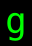

記号 g のモンスター / Monsters with symbol g
画面上で g と表示されるモンスター（38 種）。
Monsters displayed as g on screen (38).
← 記号から探す / Browse by symbol · モンスター索引 / Index
| ID | 記号 / Sym | 名前 / Name | 階層 / Lv | 希少度 / Rar | 速度 / Spd | 体力 / HP | AC | 経験値 / Exp |
|---|---|---|---|---|---|---|---|---|
| 1385 | 忍び寄る人形『メリー』 Mary, the creeping doll |
0 | 3 | 110 | 1d6 | 0 | 12 | |
| 1149 |  |
全開装甲『カバード・コア』 Opened core, the uncovered fortress |
4 | 1 | 110 | 9d5 | 1 | 40 |
| 177 | 『ボーシン』 The Borshin |
10 | 2 | 110 | 10d20 | 30 | 45 | |
| 256 | 肉ゴーレム Flesh golem |
14 | 1 | 110 | 12d8 | 30 | 50 | |
| 1371 | オブシディアン・ゴーレム Obsidian golem |
14 | 4 | 110 | 14d8 | 50 | 70 | |
| 261 | 土ゴーレム Clay golem |
15 | 2 | 110 | 14d8 | 30 | 50 | |
| 1386 | まわるポリゴン Polygon Spin |
15 | 3 | 110 | 33d8 | 40 | 70 | |
| 323 | 石ゴーレム Stone golem |
19 | 2 | 100 | 28d8 | 75 | 100 | |
| 910 | 水棲ゴーレム Aquatic golem |
19 | 1 | 100 | 25d10 | 50 | 100 | |
| 367 | 鉄ゴーレム Iron golem |
22 | 2 | 110 | 80d12 | 80 | 160 | |
| 368 | オート・ローラー Auto-roller |
22 | 2 | 120 | 70d12 | 80 | 230 | |
| 905 | 雲ゴーレム Cloud golem |
22 | 2 | 110 | 20d15 | 30 | 120 | |
| 906 | 溶岩ゴーレム Lava golem |
22 | 2 | 90 | 25d15 | 40 | 120 | |
| 1372 | エメラルド・ゴーレム Emerald golem |
24 | 4 | 110 | 80d10 | 80 | 400 | |
| 397 | キリス・ウンゴルの番人 Silent watcher |
25 | 5 | 110 | 80d20 | 80 | 590 | |
| 398 | プーケル人 Pukelman |
25 | 3 | 110 | 80d12 | 80 | 600 | |
| 1373 | サファイア・ゴーレム Sapphire golem |
26 | 4 | 110 | 80d12 | 90 | 500 | |
| 1374 | ルビー・ゴーレム Ruby golem |
26 | 4 | 110 | 80d12 | 90 | 500 | |
| 435 | コルブラン Colbran |
27 | 2 | 120 | 80d12 | 80 | 900 | |
| 451 | 『究極ダンジョン=クリーナー』 The Ultimate Dungeon Cleaner |
28 | 2 | 120 | 70d12 | 80 | 555 | |
| 1375 | ダイヤモンド・ゴーレム Diamond golem |
28 | 4 | 110 | 80d14 | 100 | 600 | |
| 464 | ミスリル・ゴーレム Mithril golem |
30 | 4 | 110 | 80d15 | 100 | 500 | |
| 1159 | プチモアイ Small Moai |
34 | 50 | 120 | 10d10 | 50 | 250 | |
| 530 | エオグ・ゴーレム Eog golem |
35 | 4 | 100 | 100d20 | 125 | 1200 | |
| 558 | 巨像 Colossus |
36 | 4 | 105 | 30d100 | 150 | 900 | |
| 895 | スカイ・ゴーレム Sky golem |
40 | 3 | 110 | 10d80 | 116 | 4000 | |
| 1160 | モアイ Moai |
40 | 2 | 105 | 30d25 | 85 | 700 | |
| 1161 | トーテムモアイ Totem Moai |
40 | 2 | 110 | 20d20 | 90 | 750 | |
| 672 | <コーン>のジャガーノート Juggernaut of Khorne |
43 | 3 | 120 | 90d19 | 90 | 2500 | |
| 691 | ドローレム Drolem |
44 | 8 | 120 | 30d100 | 130 | 12000 | |
| 1293 | 『マニマニのあくま』 Evil Mani-Mani |
45 | 3 | 120 | 258d10 | 100 | 15000 | |
| 1162 | モアイの総大将『ヴァイフ』 Vaif, the general of Moais |
49 | 2 | 120 | 60d50 | 100 | 11000 | |
| 1163 | クリスタル・キューブ Crystal cube |
50 | 4 | 125 | 1d3 | 200 | 2500 | |
| 1258 | 『ロボ・ガンダルフ』 Robo-Gandalf |
52 | 3 | 120 | 55d50 | 140 | 15000 | |
| 937 | サイバー『レムス』 Lems the Cyborg |
61 | 3 | 130 | 50d100 | 160 | 26000 | |
| 1356 | ラフィーII Laffey II |
63 | 3 | 125 | 50d40 | 180 | 35000 | |
| 1031 | 金色の怪人『ワッハマン』 Wahha-Man the Golden |
85 | 2 | 130 | 100d100 | 200 | 105000 | |
| 855 | 『破壊スル者』 The Destroyer |
94 | 1 | 130 | 170d170 | 200 | 135000 |
🤖 このページは
lib/edit/MonraceDefinitions.jsoncから自動生成されています。手動で編集しないでください — 変更は次回の再生成で上書きされます。 This page is auto-generated fromlib/edit/MonraceDefinitions.jsonc. Do not edit by hand — changes are overwritten on regeneration. 生成 / Generated: 2026-07-08 10:57 UTC · hengband6f8eeac1e4·tools/generate-wiki.mjs